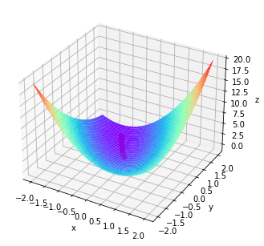

前言
买了一本迪哥写的《人工智能数学基础》，在掌握了 Python 的基本用法后，着手学习其中的内容
里面很多都是考研数学的内容，让我意识到数学没有想象中的那么“没用”
Python 有很多封装好的数学工具，正文中有大量的数学公式使用了 LateX 的语句，参考在线 LaTeX 公式编辑器-编辑器 (latexlive.com) ，很遗憾没能在本科期间认识到它们
有些 LateX 语句并不能正确地渲染, 先凑合着用吧
1 基础篇
2 高等数学基础
例 2.6 求lim x → 1 x 2 − 1 x − 1 \lim_{x \to 1}\frac{x ^ 2 - 1}{x - 1} lim x → 1 x − 1 x 2 − 1
1 2 3 4 5 6 import sympyfrom sympy import ooimport numpy as np'x' )2 - 1 ) / (x - 1 )1 )
2 \displaystyle 2 2
例 2.11 求y = a r c s i n s i n x y = arcsin\sqrt{sinx} y = a r c s i n √ s i n x
y ′ = 1 1 − s i n x ⋅ 1 2 s i n x ⋅ c o s x = c o s x 2 s i n x − s i n 2 x y'=\frac{1}{\sqrt{1-sinx} }\cdot\frac{1}{2\sqrt{sinx}}\cdot{cosx}=\frac{cosx}{2\sqrt{sinx-sin^2x}} y ′ = √ 1 − s i n x 1 ⋅ 2 √ s i n x 1 ⋅ c o s x = 2 √ s i n x − s i n 2 x c o s x
1 2 3 from sympy import *from sympy.abc import x
cos ( x ) 2 1 − sin ( x ) sin ( x ) \displaystyle \frac{\cos{\left(x \right)}}{2 \sqrt{1 - \sin{\left(x \right)}} \sqrt{\sin{\left(x \right)}}} 2 √ 1 − sin ( x ) √ sin ( x ) cos ( x )
例 2.12 求f ( x , y ) = x 2 + 3 x y + y 2 f(x,y)=x^2+3xy+y^2 f ( x , y ) = x 2 + 3 x y + y 2 ( 1 , 2 ) (1,2) ( 1 , 2 )
f x ( x , y ) = 2 x + 3 y f_{x}(x,y)=2x+3y f x ( x , y ) = 2 x + 3 y
f y ( x , y ) = 3 x + 2 y f _{y}(x,y)=3x+2y f y ( x , y ) = 3 x + 2 y
$ f _{x}(1,2)=2x+3y| _{y=2}^{x=1}=8$
f y ( 1 , 2 ) = 3 x + 2 y ∣ y = 2 x = 1 = 7 f _{y}(1,2)=3x+2y| _{y=2}^{x=1}=7 f y ( 1 , 2 ) = 3 x + 2 y ∣ y = 2 x = 1 = 7
1 2 3 4 from sympy import *from sympy.abc import x, y, f2 + 3 * x * y + y ** 2
2 x + 3 y \displaystyle 2 x + 3 y 2 x + 3 y
3 x + 2 y \displaystyle 3 x + 2 y 3 x + 2 y
1 2 fx = diff(f, x)1 , y:2 })
8 . 0 \displaystyle 8.0 8 . 0
1 2 fy = diff(f, y)1 , y:2 })
7 . 0 \displaystyle 7.0 7 . 0
2.6 方向导数 2.7 梯度
函数在某点的梯度是一个向量, 它的方向与取得最大方向导数的方向一致
$gradf(x,y)=\frac{\partial f}{\partial x}\textbf{i}+\frac{\partial f}{\partial y}\textbf{j} $
\frac{\partial f}{\partial l}=gradf\cdot \frac{\overrightarrow{l}}{\left | \overrightarrow{l} \right | }
用梯度gradf 点乘l 的单位向量就得到方向导数, 这是计算方向导数最简便的方法
例 2.15 用 Python 编程实现梯度下降法求解f ( x , y ) = x − y + 2 x 2 + 2 x y + y 2 f(x,y)=x-y+2x^2+2xy+y^2 f ( x , y ) = x − y + 2 x 2 + 2 x y + y 2
使用常规方法:
z = x − y + 2 x 2 + 2 x y + y 2 z=x-y+2x^2+2xy+y^2 z = x − y + 2 x 2 + 2 x y + y 2
z x ′ = 1 + 4 x + 2 y z'_{x}=1+4x+2y z x ′ = 1 + 4 x + 2 y
z y ′ = − 1 + 2 x + 2 y z'_{y}=-1+2x+2y z y ′ = − 1 + 2 x + 2 y
求得驻点( − 1 , 3 2 ) (-1,\frac{3}{2}) ( − 1 , 2 3 )
A = z x x ′ ′ ∣ y = 3 2 x = − 1 = 4 A=z''_{xx}| _{y=\frac{3}{2}}^{x=-1}=4 A = z x x ′ ′ ∣ y = 2 3 x = − 1 = 4
B = z x y ′ ′ ∣ y = 3 2 x = − 1 = 2 B=z''_{xy}| _ {y=\frac{3}{2}}^{x=-1}=2 B = z x y ′ ′ ∣ y = 2 3 x = − 1 = 2
C = z y y ′ ′ ∣ y = 3 2 x = − 1 = 2 C=z''_{yy}| _ {y=\frac{3}{2}}^{x=-1}=2 C = z y y ′ ′ ∣ y = 2 3 x = − 1 = 2
A C − B 2 > 0 AC-B^2>0 A C − B 2 > 0
A > 0 A>0 A > 0
原函数在( − 1 , 3 2 ) (-1,\frac{3}{2}) ( − 1 , 2 3 )
1 2 3 4 5 6 7 8 9 10 11 12 13 14 15 16 17 18 19 20 21 22 23 24 25 26 27 28 29 30 31 32 33 34 35 36 37 38 39 40 41 42 43 44 45 46 47 48 49 50 51 52 53 54 55 56 57 58 59 60 61 import matplotlib.pyplot as pltfrom mpl_toolkits.mplot3d import Axes3Dimport numpy as npdef Fun (x, y ): return x - y + 2 * x * x + 2 * x * y + y * ydef PxFun (x, y ): return 1 + 4 * x + 2 * ydef PyFun (x, y ): return -1 + 2 * x + 2 * yif __name__ == "__main__" :False ) 2 :2 :40j , -2 :2 :40j ] 1 , cstride=1 , cmap="rainbow" )'x' ) 'y' )'z' )0.008 0 0 False while not Over:if Fun(x, y) - Fun(new_x, new_y) < 7e-9 :True 'r+]' ) print ('(x, y)~(' + str (x) + ',' + str (y) + ')' )
(x, y)~(-0.9993608094022046,1.498965767887478)

2.9.5 高手点拨: 求导的三种方式
已知f ( x ) = x 5 + 2 x 4 + 3 x 2 + 5 f(x)=x^5+2x^4+3x^2+5 f ( x ) = x 5 + 2 x 4 + 3 x 2 + 5 f ′ ( 1 ) f'(1) f ′ ( 1 )
使用 Sympy 的 diff 函数
1 2 3 4 5 6 import sympyfrom sympy.abc import x, f5 + 2 * x ** 4 + 3 * x ** 2 + 5 1 })
1 9 . 0 \displaystyle 19.0 1 9 . 0
使用 scipy.misc 模块下的 derivative 函数
1 2 3 4 5 6 7 8 import numpy as npfrom scipy.misc import derivativedef f (x ):return x ** 5 + 2 * x ** 4 + 3 * x ** 2 + 5 1 , dx=1e-6 , n=1 )
18.999999999991246
使用 NumPy 模块里的 poly1d 构造f ( x ) f(x) f ( x )
1 2 3 4 import numpy as np1 , 2 , 0 , 3 , 0 , 5 ]) 1 )(1.0 )
19.0
19.0
2.10 习题
l i m x → 1 s i n ( l n x ) lim_{x\to1}sin(lnx) l i m x → 1 s i n ( l n x ) 1 2 3 4 5 import sympyfrom sympy.abc import x, f1 )
0 \displaystyle 0 0
l i m x → 8 x 3 − 2 x − 8 lim_{x\to8}\frac{\sqrt[3]{x}-2}{x-8} l i m x → 8 x − 8 3 √ x − 2 1 2 3 4 5 import sympyfrom sympy.abc import x, f1 /3 ) - 2 ) / (x - 8 )8 )
1 1 2 \displaystyle \frac{1}{12} 1 2 1
求y = x 4 − 2 x 3 + 5 s i n x + l n 3 y=x^4-2x^3+5sinx+ln3 y = x 4 − 2 x 3 + 5 s i n x + l n 3
1 2 3 4 5 import sympyfrom sympy.abc import x, y4 - 2 * x ** 3 + 5 * sympy.sin(x) + sympy.log(3 )
4 x 3 − 6 x 2 + 5 cos ( x ) \displaystyle 4 x^{3} - 6 x^{2} + 5 \cos{\left(x \right)} 4 x 3 − 6 x 2 + 5 cos ( x )
求z = ( 3 x 2 + y 2 ) 4 x + 2 y z=(3x^2+y^2)^{4x+2y} z = ( 3 x 2 + y 2 ) 4 x + 2 y ( 1 , 2 ) (1,2) ( 1 , 2 )
l n z = ( 4 x + 2 y ) ⋅ l n ( 3 x 2 + y 2 ) lnz=(4x+2y)\cdot ln(3x^2+y^2) l n z = ( 4 x + 2 y ) ⋅ l n ( 3 x 2 + y 2 )
1 z d z = [ 4 l n ( 3 x 2 + y 2 ) + 2 4 x 2 + 1 2 x y 3 x 2 + y 2 ] d x + [ 2 l n ( 3 x 2 + y 2 ) + 8 x y + 2 y 2 3 x 2 + y 2 ] d y \frac1zdz=\left[4ln(3x^2+y^2)+\frac{24x^2+12xy}{3x^2+y^2}\right]dx+\left[2ln(3x^2+y^2)+\frac{8xy+2y^2}{3x^2+y^2}\right]dy z 1 d z = [ 4 l n ( 3 x 2 + y 2 ) + 3 x 2 + y 2 2 4 x 2 + 1 2 x y ] d x + [ 2 l n ( 3 x 2 + y 2 ) + 3 x 2 + y 2 8 x y + 2 y 2 ] d y
1 2 3 4 5 6 import sympyfrom sympy.abc import x, y, z3 * x ** 2 + y ** 2 ) ** (4 * x + 2 * y)
( 3 x 2 + y 2 ) 4 x + 2 y ( 6 x ( 4 x + 2 y ) 3 x 2 + y 2 + 4 log ( 3 x 2 + y 2 ) ) \displaystyle \left(3 x^{2} + y^{2}\right)^{4 x + 2 y} \left(\frac{6 x \left(4 x + 2 y\right)}{3 x^{2} + y^{2}} + 4 \log{\left(3 x^{2} + y^{2} \right)}\right) ( 3 x 2 + y 2 ) 4 x + 2 y ( 3 x 2 + y 2 6 x ( 4 x + 2 y ) + 4 log ( 3 x 2 + y 2 ) )
1 zx.evalf(subs={x:1 , y:2 })
8 4 4 0 1 2 0 3 . 0 9 2 7 3 6 9 \displaystyle 84401203.0927369 8 4 4 0 1 2 0 3 . 0 9 2 7 3 6 9
1 2 zy = sympy.diff(z, y)
( 3 x 2 + y 2 ) 4 x + 2 y ( 2 y ( 4 x + 2 y ) 3 x 2 + y 2 + 2 log ( 3 x 2 + y 2 ) ) \displaystyle \left(3 x^{2} + y^{2}\right)^{4 x + 2 y} \left(\frac{2 y \left(4 x + 2 y\right)}{3 x^{2} + y^{2}} + 2 \log{\left(3 x^{2} + y^{2} \right)}\right) ( 3 x 2 + y 2 ) 4 x + 2 y ( 3 x 2 + y 2 2 y ( 4 x + 2 y ) + 2 log ( 3 x 2 + y 2 ) )
1 zy.evalf(subs={x:1 , y:2 })
4 8 7 8 8 9 4 5 . 5 4 6 3 6 8 4 \displaystyle 48788945.5463684 4 8 7 8 8 9 4 5 . 5 4 6 3 6 8 4
求方向导数和梯度
求函数z = x 2 + y 2 z=x^2+y^2 z = x 2 + y 2 ( 1 , 2 ) (1,2) ( 1 , 2 ) ( 1 , 2 ) (1,2) ( 1 , 2 ) ( 2 , 2 + 3 ) (2,2+\sqrt{3}) ( 2 , 2 + √ 3 ) ( 1 , 2 ) (1,2) ( 1 , 2 )
1 2 3 4 5 6 7 8 import sympy as spimport numpy as npfrom sympy.abc import x, y, z2 + y ** 2 1 , y:2 }), zy.evalf(subs={x:1 , y:2 })], dtype=float )
array([2., 4.])
1 2 3 A = np.array([1 , 2 ])2 , 2 + 3 ** 0.5 ], dtype=float )
array([1. , 3.46410162])
3 微积分
例 3.6 定积分
应用 SciPy 科学计算库求∫ 0 3 c o s 2 ( e x ) d x \int_{0}^{3} cos^2(e^x)dx ∫ 0 3 c o s 2 ( e x ) d x
1 2 3 4 5 import numpy as npfrom scipy.integrate import quadlambda x:np.cos(np.exp(x)) ** 2 0 , 3 )
(1.296467785724373, 1.397797133112089e-09)
输出结果(积分值, 误差)
例 3.7 二重积分
求∬ D e − x x − y 2 d x d y \iint_{D}e^{-x^x-y^2}dxdy ∬ D e − x x − y 2 d x d y D = { ( x , y ) ∣ 0 ≤ x ≤ 1 0 , 0 ≤ y ≤ 1 0 } D=\left \{ (x,y) | 0 \le x \le 10,0 \le y \le 10\right \} D = { ( x , y ) ∣ 0 ≤ x ≤ 1 0 , 0 ≤ y ≤ 1 0 }
1 2 3 4 5 6 7 8 9 10 11 12 13 14 15 16 17 18 19 20 21 22 23 24 25 26 27 28 29 30 31 32 33 34 35 36 37 38 39 40 41 42 43 import numpy as npfrom scipy.integrate import dblquad def integrand (x,y ):return np.exp(-x ** 2 - y ** 2 )0 10 0 10 """ scipy.integrate.dblquad(func, a, b, gfun, hfun, args=(), epsabs=1.49e-08, epsrel=1.49e-08) 参数： func：可调用的 至少有两个变量的 Python 函数或方法：y 必须是第一个参数，x 必须是第二个参数。 a, b：浮点数 x:a < b 的积分极限 gfun：可调用或浮点数 y 中的下边界曲线，它是一个函数，采用单个浮点参数 (x) 并返回浮点结果或表示恒定边界曲线的浮点数。 hfun：可调用或浮点数 y 中的上边界曲线(与 gfun 的要求相同)。 args：顺序，可选 传递给 func 的额外参数。 epsabs：浮点数，可选 绝对容差直接传递到内部一维正交积分。默认值为 1.49e-8。dblquad 尝试获得 abs(i-result) <= max(epsabs, epsrel*abs(i)) 的精度，其中 i = 从 gfun(x) 到 hfun(x) 的 func(y, x) 的内部积分，而 result 是数值近似值。请参阅下面的 epsrel。 epsrel：浮点数，可选 内部一维积分的相对容差。默认值为 1.49e-8。如果 epsabs <= 0, epsrel 必须大于 5e-29 和 50 * (machine epsilon).看易胜宝更多。 返回： y：浮点数 结果积分。 abserr：浮点数 误差的估计。 """ lambda x:y_a, lambda x:y_b)
(0.7853981633974476, 1.375309851021853e-08)
例 3.8 定积分近似求解
用定义法求∫ 0 3 c o s 2 ( e x ) d x \int_{0}^{3} cos^2(e^x)dx ∫ 0 3 c o s 2 ( e x ) d x
1 2 3 4 5 6 7 8 9 10 11 12 13 14 15 16 17 18 from numpy import *0 , 3 def f (x ):return cos(exp(x)) ** 2 def trape (n ):sum = 0 for i in range (1 , n):sum += (f(x) + f(x2)) * h / 2 return sum
0.944822326405313
1.2843391540917448
1.2960750567338157
不定积分
$ \int lnx $
1 2 3 4 5 from sympy import *from sympy.abc import x
x log ( x ) − x \displaystyle x \log{\left(x \right)} - x x log ( x ) − x
3.8 习题
∫ 1 2 x 2 + 1 x 4 d x \int _{1}^{2} x^2 + \frac {1}{x^4}dx ∫ 1 2 x 2 + x 4 1 d x
$ =(\frac {1}{3}x^3 - \frac {1}{3}x^{-3}) | _{1}^{2}$
$ = \frac {21}{8}$
1 2 3 4 5 import numpy as npfrom scipy.integrate import quadlambda x: x ** 2 + x ** (-4 )1 , 2 )
(2.625, 2.914335439641036e-14)
$ \int _{-1}^{0}\frac {3x4+3x 2+1}{x^2+1}dx$
$ =\int _{-1}{0}3x 2+\frac {1}{1+x^2}dx$
$ = (x^3 + arctanx)| _{-1}^{0} $
$ = 1 + \frac{\pi}{4} $
1 2 3 4 5 import numpy as npfrom scipy.integrate import quadlambda x: (3 * x ** 4 + 3 * x ** 2 + 1 ) / (1 + x ** 2 )1 , 0 )
(1.7853981633974483, 1.9821901491273144e-14)
利用定积分的定义计算极限:
$ lim _{n \to \infty}\frac {1{p}+2 {p}+…+n{p}}{n {p+1}}$
$ = lim {n \to \infty}\frac {\sum {i=1}{n}i p}{n^{p+1}} $
$ = \frac{1}{n} lim {n \to \infty}\sum {i=1}{n}(\frac{i}{n}) p $
$ = \int _{0}{1}x pdx $
$ = \frac {1}{p+1} $
4 泰勒公式与拉格朗日乘子法
指对连, 三角断,
例 4.7 根据e x e^x e x n n n e e e
$ e\approx 1+1+\frac{1}{2!}+\frac{1}{3!}+…+\frac{1}{n!}$
1 2 3 4 5 6 7 8 9 10 11 12 13 14 15 16 17 18 19 20 21 import numpy as npimport pandas as pddef f (n ):1 if n == 0 :1 else :1 for i in range (1 , m):1.0 1 for j in range (1 , k):1.0 / sum2return sum110 for i in range (1 , num + 1 )]), columns=['n' , 'e' ])
n
e
0
1.0
2.000000
1
2.0
2.500000
2
3.0
2.666667
3
4.0
2.708333
4
5.0
2.716667
5
6.0
2.718056
6
7.0
2.718254
7
8.0
2.718279
8
9.0
2.718282
9
10.0
2.718282
例 4.13 s i n x sinx s i n x n n n
s i n x = x − x 3 3 ! + x 5 5 ! − x 7 7 ! + . . . + ( − 1 ) m − 1 x 2 m − 1 ( 2 m − 1 ) ! + R 2 m ( x ) sinx = x - \frac {x^3}{3!} + \frac {x^5}{5!} - \frac {x^7}{7!} + ...+ (-1)^{m-1}\frac {x^{2m-1}}{(2m-1)!}+R_{2m}(x) s i n x = x − 3 ! x 3 + 5 ! x 5 − 7 ! x 7 + . . . + ( − 1 ) m − 1 ( 2 m − 1 ) ! x 2 m − 1 + R 2 m ( x )
1 2 3 4 5 6 7 8 9 10 11 12 13 14 15 16 17 18 19 20 21 22 23 import numpy as npimport pandas as pddef fsin (x ):20 sum = 0.0 for i in range (1 , m+1 ):2 * i - 1 1 , 1 , 1 for j in range (1 , i): for j in range (1 , n + 1 ):sum += temp1 * temp2 / temp3return sum 'np.sin(x)' : np.array([np.sin(x) for x in range (-20 , 1 )]),'fsin(x)' : np.array([fsin(x) for x in range (-20 , 1 )]), 'error' : np.array([fsin(x) - np.sin(x) for x in range (-20 , 1 )])},for x in range (-20 , 1 )]))
np.sin(x)
fsin(x)
error
-20
-0.912945
5364.411846
5.365325e+03
-19
-0.149877
666.994385
6.671443e+02
-18
0.750987
74.739042
7.398806e+01
-17
0.961397
8.185042
7.223645e+00
-16
0.287903
0.899283
6.113793e-01
-15
-0.650288
-0.606249
4.403901e-02
-14
-0.990607
-0.987967
2.640574e-03
-13
-0.420167
-0.420039
1.282664e-04
-12
0.536573
0.536578
4.880595e-06
-11
0.999990
0.999990
1.394300e-07
-10
0.544021
0.544021
2.831679e-09
-9
-0.412118
-0.412118
3.790196e-11
-8
-0.989358
-0.989358
2.858824e-13
-7
-0.656987
-0.656987
3.441691e-15
-6
0.279415
0.279415
3.497203e-15
-5
0.958924
0.958924
-2.775558e-15
-4
0.756802
0.756802
-6.661338e-16
-3
-0.141120
-0.141120
1.110223e-16
-2
-0.909297
-0.909297
0.000000e+00
-1
-0.841471
-0.841471
0.000000e+00
0
0.000000
0.000000
0.000000e+00
4.9 习题
l i m x → 0 ( s i n x − x c o s x s i n 3 x ) lim _{x \to 0}(\frac {sinx-xcosx}{sin^3x}) l i m x → 0 ( s i n 3 x s i n x − x c o s x )
= l i m x → 0 x − 1 6 x 3 − x ( 1 − 1 2 x 2 ) x 3 =lim _{x \to 0}\frac {x-\frac{1}{6}x^3-x(1-\frac{1}{2}x^2)}{x^3} = l i m x → 0 x 3 x − 6 1 x 3 − x ( 1 − 2 1 x 2 )
= l i m x → 0 − 1 6 x 3 + 1 2 x 3 x 3 =lim _{x \to 0}\frac {-\frac{1}{6}x^3+\frac{1}{2}x^3}{x^3} = l i m x → 0 x 3 − 6 1 x 3 + 2 1 x 3
= 1 3 =\frac{1}{3} = 3 1
1 2 3 4 5 6 import sympyfrom sympy import sin, cos, limit'x' )3 )0 )
1 3 \displaystyle \frac{1}{3} 3 1